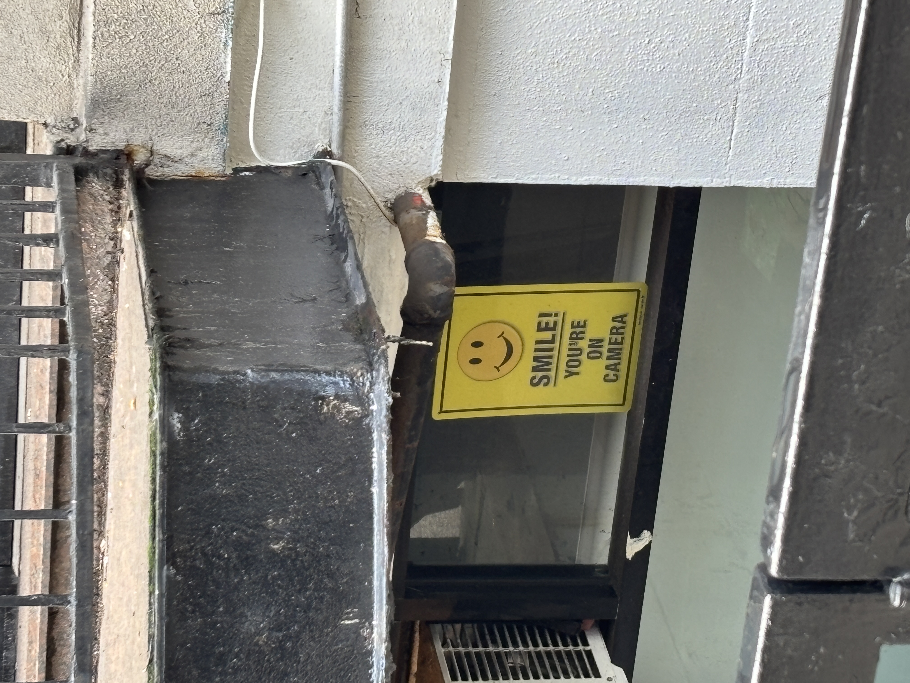
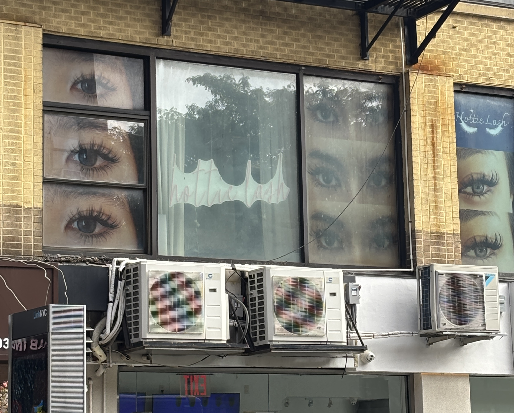

In the humainoid face is an implicit invitation. There is a suggestion, by nature of the simple etching of a face, that means that you are being watched.
Carved faces on building facades were once put there to ward off evil spirits. Grotesques, chimeras, mascarons. They take new shape, always, but the face — in one way or another — remains.
You are being watched, potential paying customer. Don't forget to pay.
